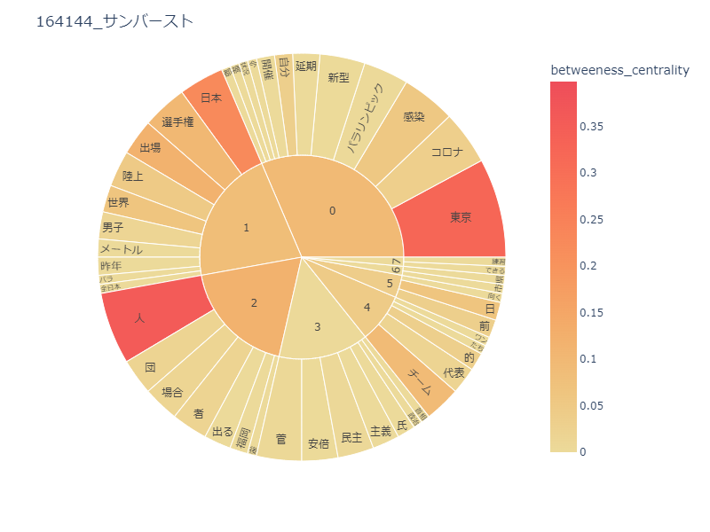
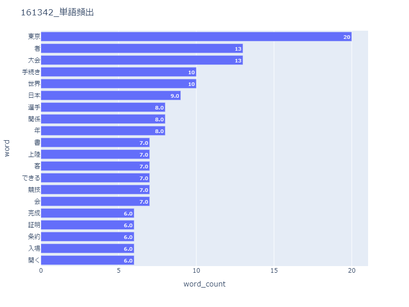

データマイニング
1964年と2021年の東京オリンピックに関連する記事を調べ、出てくる単語をもとに当時の出来事を読みといていく。
円グラフの比較

棒グラフでの比較

1964年は、日本での初開催の影響か、“大会”や“手続き”といった、競技に関することよりは観戦に関するワードが多い。
2020年は、地名や競技名のほかに、政治に関するワードが多く使われていた。
二つのグラフから読み取れたこと
どちらとも大会や競技に関しての記事が多かった。
1964年は観光や観戦についての単語が多く、2020年はコロナに関する単語が多かった。